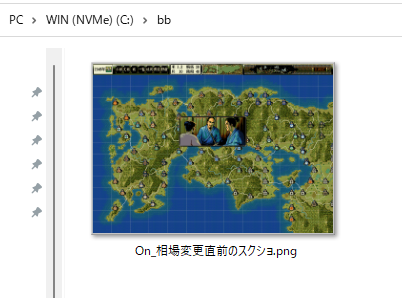

文字列ではなく「画像」をその瞬間スクリーンショットとして撮りたいといった場合もあります。
そういった場合に使えるのがこの「デバッグ画像出力」です。
以下の例では、相場変更時に天翔記の画面のスクリーンショットを指定のファイル名へと保存する。
ファイルは「天翔記フォルダ」にある。
void カスタム::On_相場変更直前() {
デバッグ画像出力("On_相場変更直前のスクショ.png");
}
もちろんフルパスを指定することも可能だ。
その場合には、ディレクトリがないのであれば、ディレクトリを作る必要がある。
(ディレクトリが存在すると分かっているのであれば、ディレクトリを作る必要はない)
// mkdirに必要
#include <direct.h>
void カスタム::On_相場変更直前() {
// C:\bb というディレクトリを作る
// (既にディレクトリが存在しているなら、実行に失敗するが、存在するのであるから問題はない)
_mkdir(R"(C:\bb)");
// スクリーンショットを保存する。(すでにファイルがあっても上書き)
デバッグ画像出力(R"(C:\bb\On_相場変更直前のスクショ.png)");
}

デバッグ画像に関する主な所は以上となります。 詳しくは「デバッグ画像情報型.h」などを参照してください。